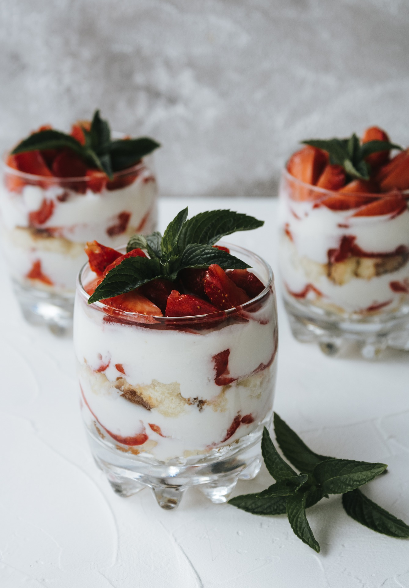
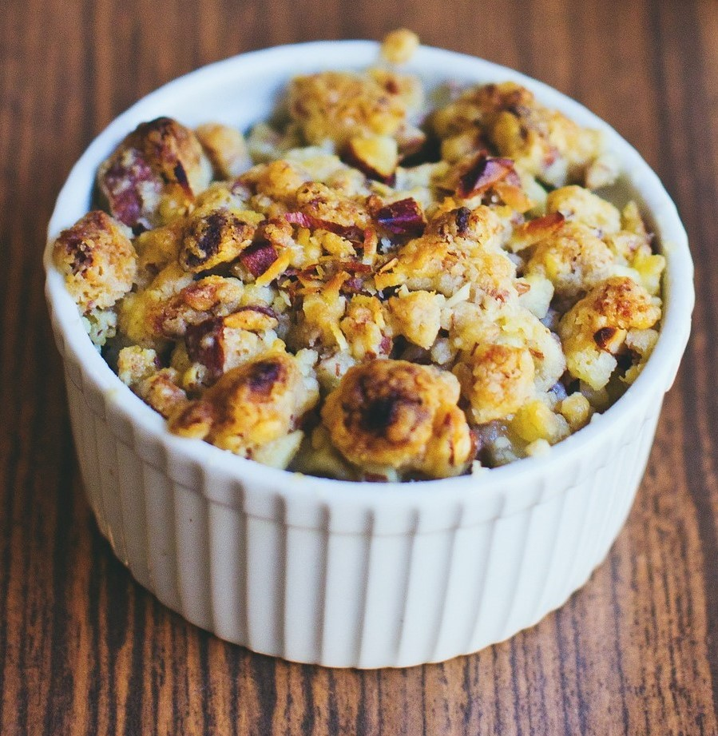

Let's Cook
- Appetizers
-
Yorkshire Pudding

Yorkshire Pudding is a famous dish popular among British people. Especially, this is preparing on Sundays. Let's see how to prepare this delicious dish
-
These are traditional British snacks consisting of sausages which are wrapped in puff pastry. Before bake these sausage rolls should brush with eggs or milk.

- Triffle
Triffle is a layered dessert originated from our Kingdom. However, now it is popular throughout the plannet.
- Apple Crumble
Apple crumble is a delecious baked desert consist with tender-caramelized apples topped with a crispy mixture of rolled oats, flour, sugar and butter. 
- Apple Crumble